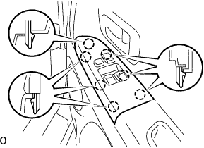

フロントスピーカASSY No.1(RH) 取り付け |
| 1. フロントスピーカASSY No.1(RH)取り付け |
|
リベット3本で、フロントスピーカーASSY No.1 RHを取り付ける。
| 2. フロントドアトリム ボードSUB-ASSY RH取り付け |
 |
クリップをかん合させ、フロントドアトリムボードRHをドアパネルに組み付ける。
スクリューで、フロントドアトリムボードRHをフロントドアインサイドハンドルRHと共に取り付ける。
| 3. ドア プルハンドル取り付け |
スクリューでドアプルハンドルを取り付ける。
| 4. マルチプレックス ネットワーク マスタ スイッチASSY取り付け |
スクリューでマルチプレツクスネツトワークマスタスイツチASSYをフロントドアアームレストベースパネルUPR RHに取り付ける。
コネクタを接続する。
|  |
ツメをかん合させマルチプレツクスネツトワークマスタスイツチASSYをフロントドアトリムボードRHに取り付ける。
| 5. フロントドアロワーフレームブラケット ガーニッシュ RH取り付け |
 |
ツメおよびクリップをかん合させ、フロントドアロワーフレームブラケツトガーニツシユRHを取り付ける。